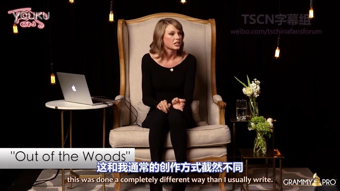
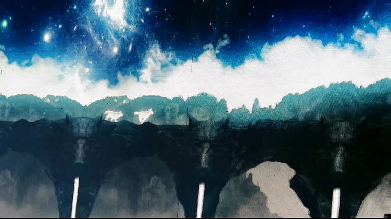

3. OOTW和WD和IKP
TS在介绍某一首歌时说
Are we gonna make it to next week? You are just honestly like, this is probably not gonna last but how long is it gonna last.
我们能维持到下周吗？你心里明白，这样的感情不会持久，但又不知道能持续多久
TS在介绍Wildest Dreams时说过
Love just ends, you know, it's not a question of 'Will we break up', it's 'When will we break up'
爱情不会长久的，你明白，这不是“我们会不会分手”的问题，而是“我们什么时候分手”
—— from introduction to < Wildest Dreams > at Nova's Red Room 2015-12-03
{kind=link}
两个描述几乎一模一样，那这首歌TS是在讲< Wildest Dreams >吗？
不，她在说< Out of the Woods >
—— from GRAMMY PRO Listening Session with Taylor Swift Part2
在1989演唱会上，有一首歌在大屏幕上播放的画面是两只狐狸一直在奔跑，从白天跑到黑夜，从森林跑到高山
在< I Know Places >中有句经典歌词
They are the hunters
We are the foxes
And we run
那演唱会上用两只奔跑的狐狸做视频画面的这首歌是不是< I Know Places >呢？
不，这是< Out of the Woods >
Out of the Woods和I Know Places都用狐狸来形容自己和恋人
Out of the Woods和I Know Places都在讲同一段脆弱的、承受巨大压力的、所有人反对的、需要隐藏的恋情（TS在GRAMMY PRO Listening Session Part2中说了I Know Places和Out of the Woods描述的是同一段恋爱经过）
Out of the Woods和Wildest Dreams都说自己和恋人最后一定会分手，但不知何时会分手
Wildest Dreams和I Know Places都是回望过去伤痛教训，现在她又遇到了新的人，她该怎么做，会有好结果吗
这三首歌的共同点很多
与上一节中的AYHTDWS和HYGTG一样，这三首也是写于同一时期。